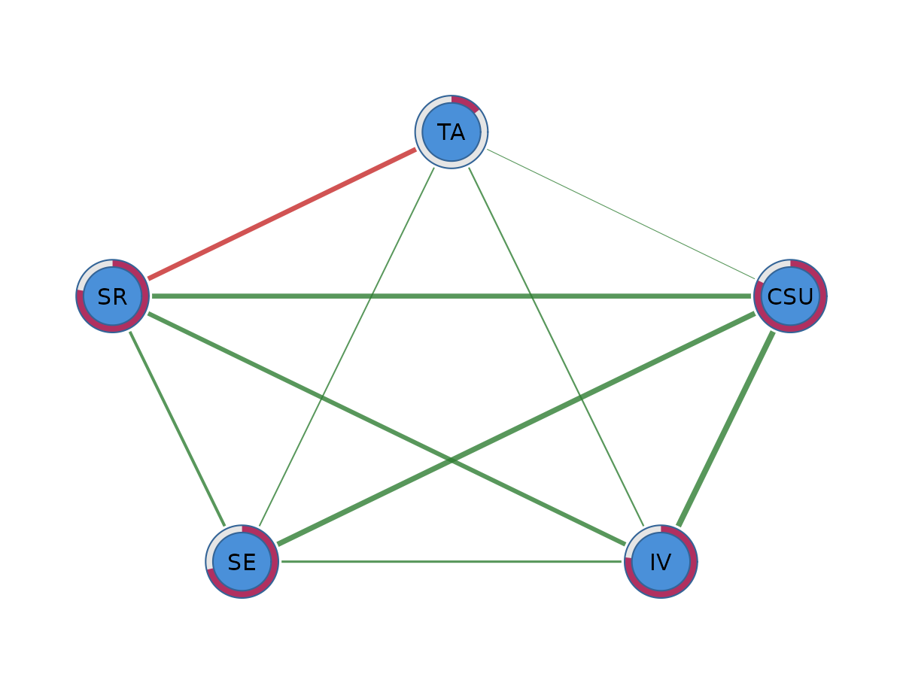
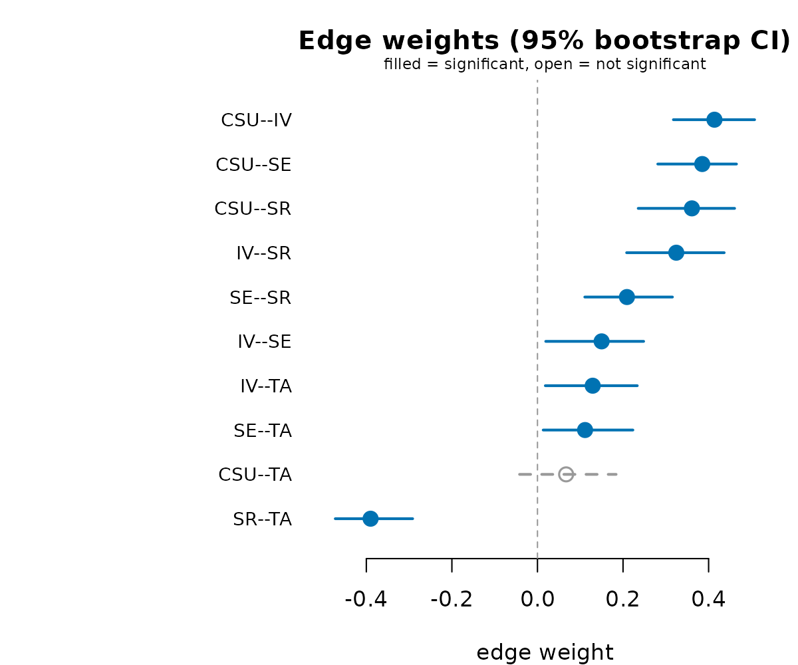
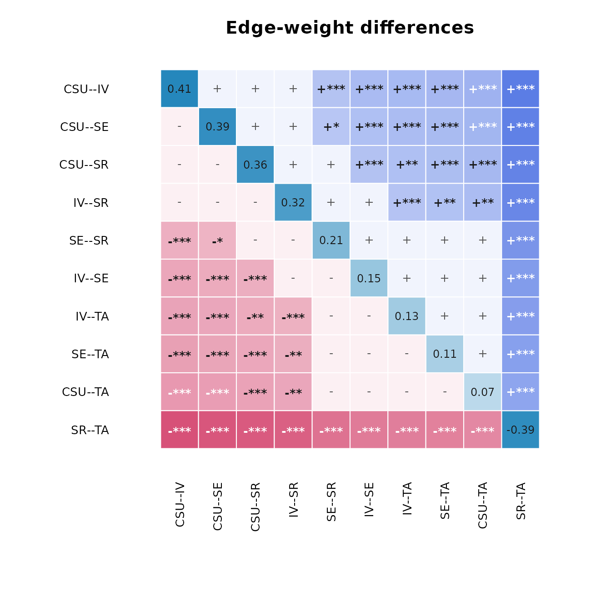

Visualizing networks with cograph
Mohammed Saqr
University of Eastern FinlandSonsoles López-Pernas
University of Eastern FinlandSource:
vignettes/visualizing-with-cograph.Rmd
visualizing-with-cograph.RmdHow should a network figure be drawn so that its visual structure
supports, rather than distorts, interpretation? In a Gaussian graphical
model, variables are displayed as nodes and edges depict associations
between pairs of variables conditional on the others. This
representation helps researchers examine interdependence among
psychological constructs instead of considering each construct
separately (Saqr et al., 2024). Choices about network visualisation are
therefore part of analysis and interpretation, not merely presentation.
R tools such as qgraph have made network figures accessible
(Epskamp et al., 2012), while practical guidance highlights the ways in
which visual decisions can affect the conclusions readers draw (Jones et
al., 2018).
A network diagram can help researchers identify groups of closely related constructs, connections between groups and negative associations. However, node positions depend on the layout algorithm, edge widths can obscure important differences in magnitude, and colours may be difficult to distinguish. Moreover, a visually prominent connection is not necessarily precisely estimated or evidence of a causal relationship. Good reporting therefore requires figures that communicate edge signs and magnitudes clearly, alongside numerical estimates, uncertainty assessments and an account of the choices used to construct the display (Burger et al., 2023).
In education, psychological networks have been used to investigate how learning-related processes operate together. Malmberg et al. (2022) used network approaches to examine the interplay between monitoring events in regulated learning, while Saqr et al. (2021) studied the relational and temporal dynamics of self-regulation in academic writing. Such applications illustrate why a network view can be useful when motivation, cognition and regulation are intertwined. They also make comparability important: a change in the apparent arrangement of nodes across figures should not be mistaken for a substantive difference between learners, groups or occasions.
This article uses cograph to visualise a Gaussian
graphical model of five self-regulated learning constructs derived from
model-generated survey responses (Vogelsmeier et al., 2025). It moves
from the default display to choices relevant to publication: node
layouts and appearance, the encoding and filtering of edges, edge-weight
distributions, bootstrap diagnostics, themes, comparisons between groups
and figure export. Throughout, the aim is to make the relationship
between the figure and the estimated network clear. The plotting chunks
run only when cograph is installed.
Data
SRL_GPT contains 300 sets of responses to the Motivated
Strategies for Learning Questionnaire, expressed as construct scores on
a scale from 1 to 7. These are responses generated by a large language
model (GPT), rather than observations from students, in a study of how
language models respond to psychological questionnaires (Vogelsmeier et
al., 2025). SRL_Claude contains a further 300
model-generated responses and is used for the group comparison. The
example demonstrates visualisation methods, not findings about a
population of learners.
-
Nodes:
CSU(cognitive strategy use),IV(intrinsic value),SE(self-efficacy),SR(self-regulation) andTA(test anxiety). - Observations: one row per respondent; the data are complete.
ebic_glasso() estimates a regularised Gaussian graphical
model. Its edges represent partial correlations, with the extended
Bayesian information criterion used to select the network.
fit <- ebic_glasso(SRL_GPT)
fit
#> <psychnet> glasso network
#> nodes: 5 edges: 10 (undirected)
#> lambda: 0.00861 gamma: 0.5
#> optimality (KKT residual): 2.21e-10The fitted network contains 10 edges. Nine are positive, with weights from 0.049 to 0.412, and the association between self-regulation and test anxiety is negative (-0.350). These values describe conditional associations, not directional effects. Their substantive interpretation is covered in the Gaussian graphical models article.
What does the default figure show?
plot() displays the fitted network using
cograph::splot(). Each node represents a construct and each
edge an estimated partial correlation. Edge colour distinguishes
positive from negative associations, while width indicates their
absolute magnitude. Thus, a thicker line signals a larger estimated
association, irrespective of its sign.
plot(fit)
The learning-related constructs are connected by several
comparatively wide, positive edges. By contrast, the negative edge
linking self-regulation and test anxiety is readily distinguishable. The
figure provides an overview, but individual edge values should be
checked against the estimates. Calling cograph::splot()
directly produces the same display and permits the adjustments
introduced below.
cograph::splot(fit)
Where should the nodes be placed?
The layout argument controls node placement. A circular
layout arranges nodes around a ring, making their positions consistent
when the same nodes are supplied in the same order. A spring layout
positions more strongly connected nodes nearer to one another, which can
make patterns of association easier to see. The seed
argument fixes the random starting conditions so that a spring-layout
figure can be reproduced.
op <- par(mfrow = c(1, 2), mar = c(1, 1, 3, 1))
cograph::splot(fit, layout = "circle", title = "circle")
cograph::splot(fit, layout = "spring", seed = 11, title = "spring")
par(op)In the spring layout, cognitive strategy use, self-regulation and intrinsic value appear close together because of their relatively strong connections. Test anxiety lies towards the edge of the diagram, with its negative link to self-regulation particularly evident. This spatial arrangement is generated by the plotting algorithm and is not an additional statistical result. The circular layout is useful for consistent comparisons; the spring layout is useful when exploring the structure of a single network.
How can nodes carry information?
Node size can encode a summary of a construct’s connections.
scale_nodes_by = "strength" requests scaling by the
network’s strength measure, while node_size_range specifies
the range of displayed sizes. The fill, border and label arguments can
be adjusted to distinguish nodes and improve legibility. Readers should
be told what the size represents, since different centrality measures
answer different questions.
cograph::splot(
fit,
layout = "circle",
scale_nodes_by = "strength",
node_size_range = c(4, 12),
node_fill = c("#E69F00", "#56B4E9", "#009E73", "#0072B2", "#CC79A7"),
node_border_color = "white",
node_border_width = 2,
label_size = 0.9,
title = "Node size scaled by strength"
)
For this signed network, cograph bases the plotted sizes
on signed edge weights. The resulting ordering corresponds to expected
influence from net_centralities(), rather than to absolute
strength. Cognitive strategy use (1.198) and intrinsic value (1.001)
have the largest signed values, whereas test anxiety (-0.091) has the
smallest. Self-regulation has the highest absolute strength (1.231), but
its negative association with test anxiety offsets some of its positive
associations, giving an expected influence of 0.532 and a less prominent
node. A caption describing nodes as “size by strength” should specify
whether signed or absolute weights were used.
How should edges be encoded?
For a signed network, both the direction and magnitude of
associations need to be apparent. edge_positive_color and
edge_negative_color select colours for the two signs, and
edge_width_range maps absolute edge weights to line widths.
The threshold argument suppresses edges whose absolute
weights fall below a specified value, while edge_labels
adds the numerical estimates. Labels are particularly helpful when
figures are viewed without colour.
cograph::splot(
fit,
layout = "circle",
threshold = 0.05,
edge_width_range = c(0.5, 5),
edge_positive_color = "#0072B2",
edge_negative_color = "#D55E00",
edge_labels = TRUE,
edge_label_size = 0.7,
edge_label_bg = "white",
title = "Thresholded edge weights"
)
Here, a threshold of 0.05 conceals the smallest edge, between cognitive strategy use and test anxiety (0.049), leaving nine visible edges with their partial correlations labelled. This is a display decision: the estimated network still contains all 10 edges. Researchers should report the threshold in the caption so that readers do not mistake an omitted line for an estimated zero.
cograph::plot_edge_weights() presents the distribution
of estimated edge weights independently of node placement. This view
helps distinguish the numerical distribution from the visual prominence
of edges in a diagram.
cograph::plot_edge_weights(fit)
The histogram includes one negative edge (-0.350), four positive edges below 0.2 and five stronger positive edges among the learning constructs, with weights reaching 0.412. Three of the four smaller positive edges involve test anxiety. The mean signed edge weight is approximately 0.17. Inspecting this distribution helps assess how a proposed display threshold would affect the information retained in the figure.
How precise are the edges?
A network diagram displays estimated associations, but does not by
itself show their precision. net_boot() calculates edge
estimates across bootstrap resamples, and plot() displays
their intervals. For speed, this illustration uses 250 resamples and the
partial-correlation estimator, which is not identical to the regularised
estimator used for the original network. For an applied analysis, it is
preferable to bootstrap the chosen estimation method and use at least
1,000 resamples. Further guidance appears in the network reliability
article.
set.seed(1)
bs <- net_boot(SRL_GPT, method = "pcor", n_boot = 250, cores = 1)
bs
#> <psychnet_bootstrap> pcor, 250 resamples, 95% CI
#> 10 edges (9 significant), 5 nodes, measures: strength, expected_influence
plot(bs)
In this bootstrap output, nine of the 10 edges have 95% intervals
that exclude zero. The remaining edge joins cognitive strategy use and
test anxiety, consistent with its small point estimate and its omission
from the thresholded display. These intervals concern the bootstrap
estimator used here. With type = "edge_diff", the plot
summarises pairwise comparisons between estimated edge weights:
plot(bs, type = "edge_diff")
difference_test() also provides pairwise edge
comparisons and their confidence intervals in tabular form. With
style = "forest", the estimated differences and intervals
are shown as a forest plot, making their magnitude and uncertainty
easier to inspect.
plot(difference_test(bs, type = "edge"), style = "forest")
The output identifies 26 of the 45 edge pairs as differing in size. The forest plot complements the comparison matrix by showing the estimated magnitude and interval of each pairwise difference.
How can a figure follow a house style?
The theme argument provides predefined colour and
graphical settings, allowing figures to follow a consistent presentation
style without changing the estimated network. The examples below
contrast a restrained appearance with a palette designed for colour
accessibility.
op <- par(mfrow = c(1, 2), mar = c(1, 1, 3, 1))
cograph::splot(fit, theme = "minimal", title = "minimal")
cograph::splot(fit, theme = "colorblind", title = "colorblind")
par(op)The colourblind theme is designed to make edge colours easier to distinguish for readers with common forms of colour-vision deficiency. Because colour alone should not carry the interpretation, adding numerical edge labels provides a second way of identifying the sign of an association.
How can networks of several groups be compared?
psychnet() can estimate separate networks for categories
identified by group. Here the two model-generated response
datasets are combined, and a source indicator identifies the responses
from each model. This permits a side-by-side illustration of networks
with the same five constructs.
grouped_srl <- rbind(
data.frame(SRL_GPT, source = "GPT", check.names = FALSE),
data.frame(SRL_Claude, source = "Claude", check.names = FALSE)
)
group_fit <- psychnet(grouped_srl, group = "source", method = "glasso")
summary(group_fit)
#> group nodes edges mean_abs_weight
#> 1 GPT 5 10 0.2444301
#> 2 Claude 5 10 0.3536997
cograph::splot(group_fit, layout = "circle", psych_styling = TRUE)
cograph::splot() presents the two networks in a grid
with a common circular layout. Nodes therefore occupy corresponding
positions, making individual connections easier to compare without
confounding changes in position with changes in estimated weights. Both
networks have 10 edges. The mean absolute edge weight is 0.354 for
Claude and 0.244 for GPT, as shown by the group summaries. In the Claude
network, intrinsic value and self-efficacy have a negative association;
test anxiety is positively associated with cognitive strategy use and
negatively associated with self-efficacy. These are descriptive
comparisons. Establishing whether between-group differences exceed
sampling variation requires a formal comparison using
net_compare().
How is the figure saved?
The filename, width, height
and res arguments specify the output file and its
dimensions and resolution. Export settings should be selected with the
intended publication format in mind, with particular attention to
whether node labels and edge information remain legible at the final
size.
cograph::splot(fit, layout = "circle", filename = "network.png",
width = 8, height = 8, res = 300)Summary of the arguments
| Task | Arguments |
|---|---|
| Layout |
layout, seed, layout_scale,
layout_margin
|
| Nodes |
node_size, scale_nodes_by,
node_size_range, node_fill,
node_shape
|
| Labels |
labels, label_size,
label_color, label_position
|
| Edges |
edge_width_range, edge_positive_color,
edge_negative_color, edge_alpha
|
| Filtering |
threshold, minimum,
maximum
|
| Edge labels |
edge_labels, edge_label_size,
edge_label_bg, edge_label_style
|
| Themes |
theme, background, title
|
| Export |
filename, width, height,
res
|
A clear network figure complements, rather than replaces, the estimated edge table and measures of uncertainty. Consistent layouts support comparisons between groups, while explicit node and edge encodings help readers distinguish the results of the analysis from decisions made for visual presentation.
How to cite this article
Saqr, M., & López-Pernas, S. (2026). Visualizing networks with cograph. psychnets. https://doi.org/10.5281/zenodo.24567526 · HTML · PDF
References
Burger, J., Isvoranu, A.-M., Lunansky, G., Haslbeck, J. M. B., Epskamp, S., Hoekstra, R. H. A., Fried, E. I., Borsboom, D., & Blanken, T. F. (2023). Reporting standards for psychological network analyses in cross-sectional data. Psychological Methods, 28(4), 806-824. doi:10.1037/met0000471
Epskamp, S., Cramer, A. O. J., Waldorp, L. J., Schmittmann, V. D., & Borsboom, D. (2012). qgraph: Network visualizations of relationships in psychometric data. Journal of Statistical Software, 48(4). doi:10.18637/jss.v048.i04
Jones, P. J., Mair, P., & McNally, R. J. (2018). Visualizing psychological networks: A tutorial in R. Frontiers in Psychology, 9, 1742. doi:10.3389/fpsyg.2018.01742
Malmberg, J., Saqr, M., Järvenoja, H., Haataja, E., Pijeira-Díaz, H. J., & Järvelä, S. (2022). Modeling the complex interplay between monitoring events for regulated learning with psychological networks. In M. Giannakos, D. Spikol, D. Di Mitri, K. Sharma, X. Ochoa, & R. Hammad (Eds.), The multimodal learning analytics handbook (pp. 79-104). Springer. doi:10.1007/978-3-031-08076-0_4
Saqr, M., Beck, E., & López-Pernas, S. (2024). Psychological networks: A modern approach to analysis of learning and complex learning processes. In M. Saqr & S. López-Pernas (Eds.), Learning analytics methods and tutorials: A practical guide using R (pp. 639-671). Springer. doi:10.1007/978-3-031-54464-4_19
Saqr, M., Peeters, W., & Viberg, O. (2021). The relational, co-temporal, contemporaneous, and longitudinal dynamics of self-regulation for academic writing. Research and Practice in Technology Enhanced Learning, 16, 29. doi:10.1186/s41039-021-00175-7
Vogelsmeier, L. V. D. E., Oliveira, E., Misiejuk, K., López-Pernas, S., & Saqr, M. (2025). Delving into the psychology of machines: Exploring the structure of self-regulated learning via LLM-generated survey responses. Computers in Human Behavior, 173, 108769. doi:10.1016/j.chb.2025.108769